ArchiSurance
Insurance pack, built from the Archi sample model. Version 1.0, released 2026-10-07.
A fictional EU insurer with home and travel, car and legal aid products. Applications, platforms, roles, interfaces and processes come from the ArchiSurance sample that ships with Archi; costs, contracts and ratings are illustrative. Includes a back-office consolidation programme.
- Fictional EU insurer with three product lines: Home & Away (home and travel), Car, and Legal Aid
- Built from the ArchiSurance sample model that ships with Archi, the open source ArchiMate tool
- Head office data centre with a third-party recovery site; active-passive (illustrative)
- Customers buy direct or through intermediaries; payments run over the BIBIT payment network
- DORA and Solvency II apply; the Solvency II review applies from 30 January 2027
Downloads
- DashboardOpen in any browser; works offline, 512 KB
- Excel repositoryOne tab per element and relationship, 169 KB
- Atlas fileThe whole model and its history; attach it to your assistant to refresh or ask questions, 322 KB
- Archi modelThe source model; open it in Archi or import it again, 107 KB
Go straight to a view
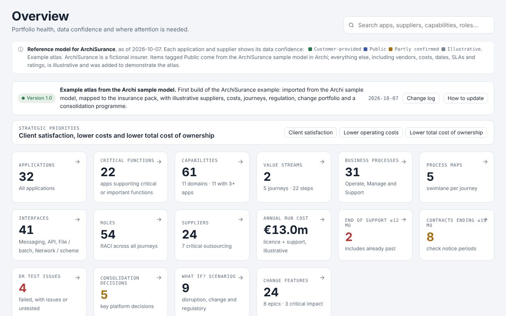
Overview
Portfolio health, data confidence and where attention is needed.
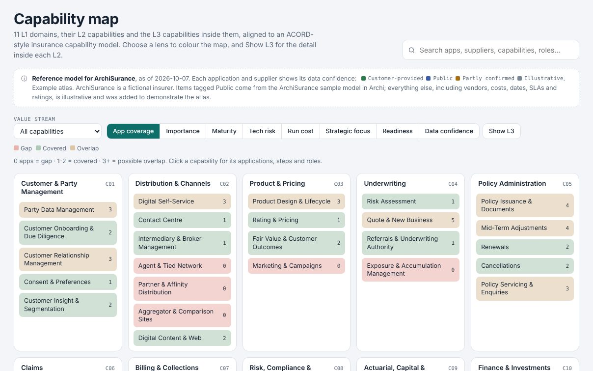
Capability map
L1 to L3 capabilities with lenses: coverage, TIME, maturity, strategy, regulation.
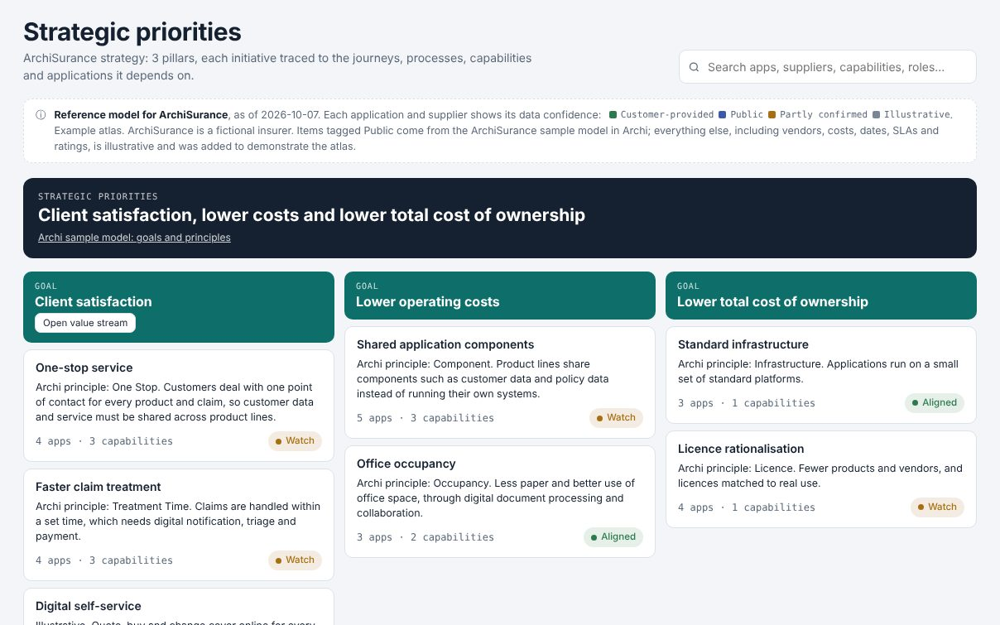
Strategic priorities
Pillars and initiatives traced to journeys, capabilities and applications.
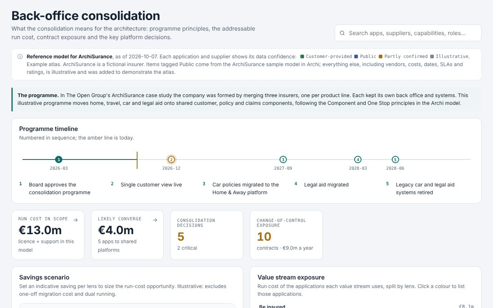
Programme
What a merger, acquisition or transformation means for the architecture.
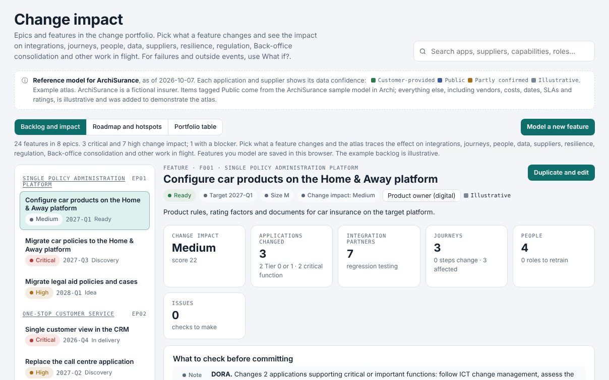
Change impact
Epics and features, and what each one changes.
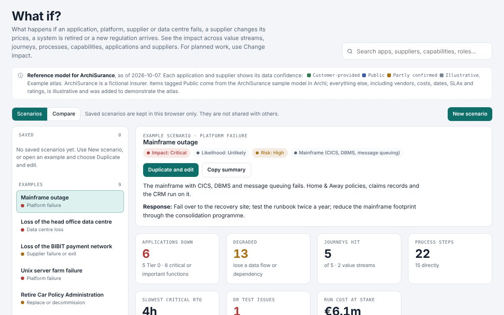
What if?
Outages, supplier failure, data centre loss, price and regulatory change.
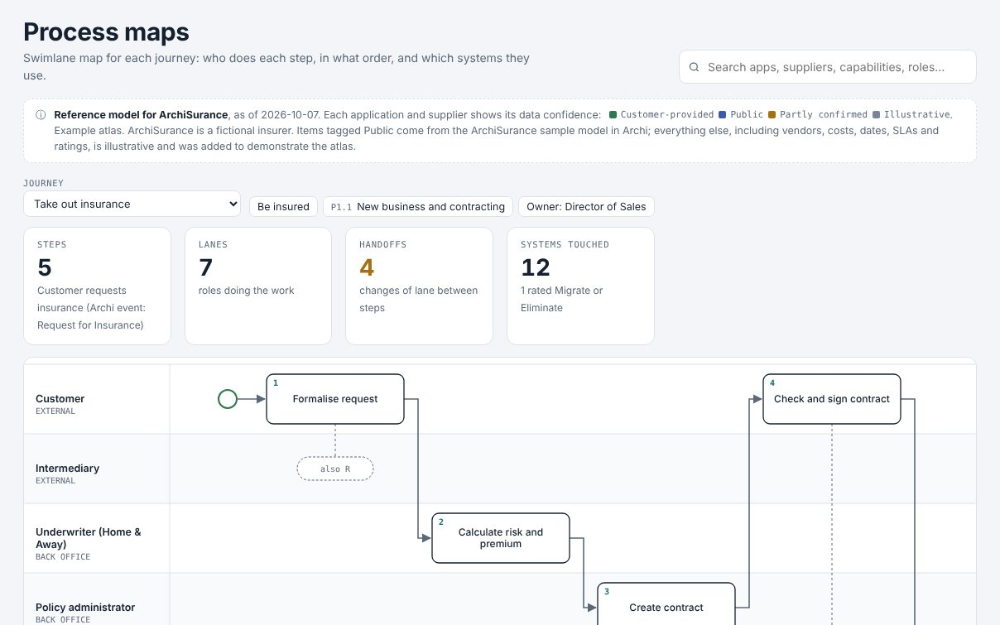
Process maps
Swimlane map for each journey: roles, steps and systems.
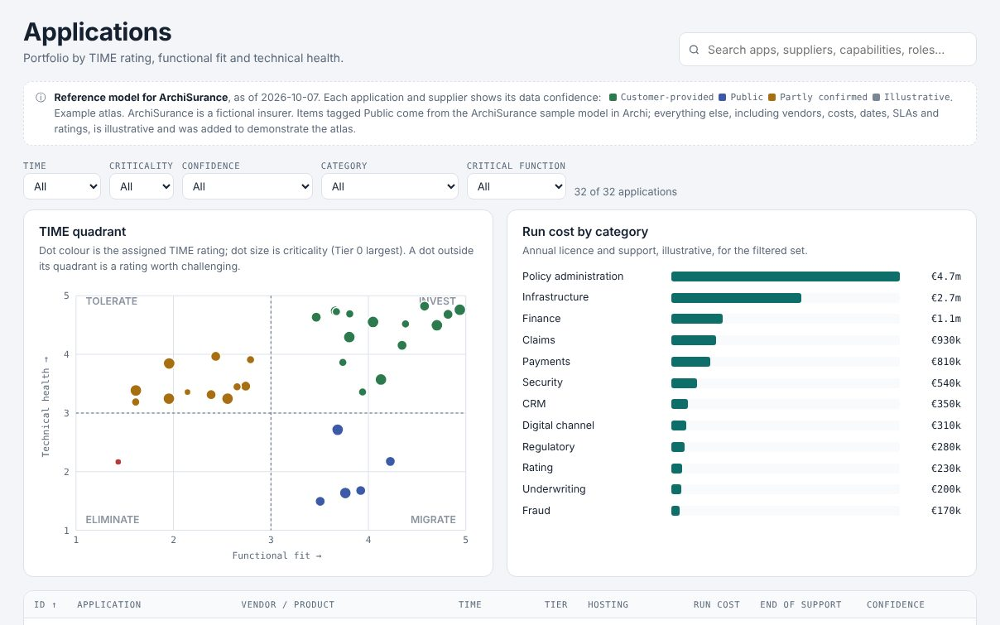
Applications
Portfolio by TIME rating, functional fit and technical health.
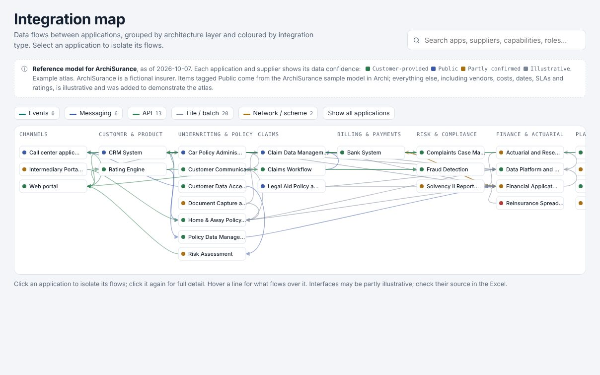
Integration map
Data flows between applications, by layer and integration type.
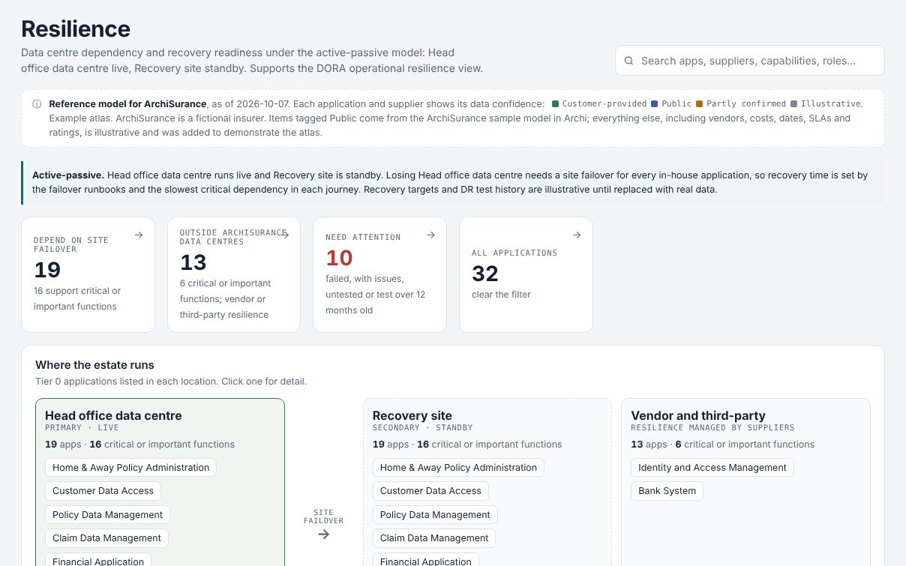
Resilience
Data centre dependency and recovery readiness.
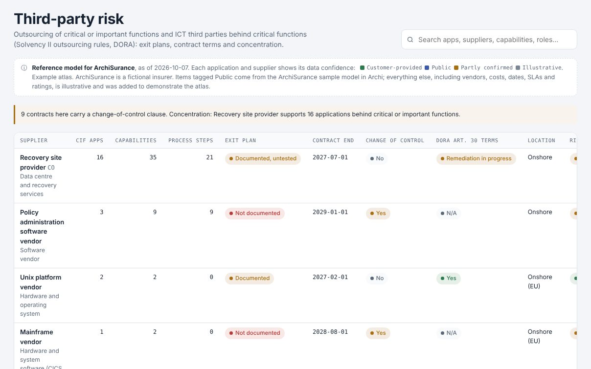
Third-party risk
Critical outsourcing and the suppliers behind critical functions.
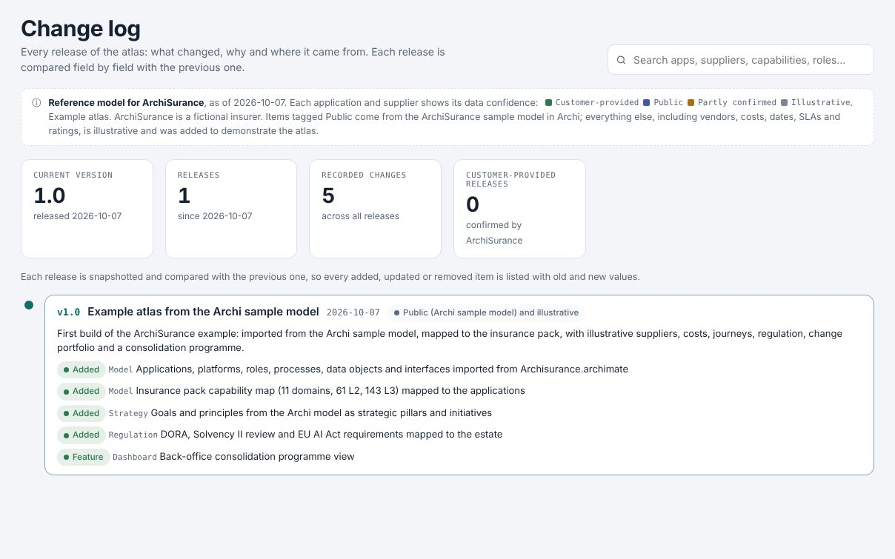
Change log
Every release, compared field by field with the previous one.
Try a refresh yourself. Download the atlas file, attach it in a chat with your assistant and ask, for example: "Add a new claims application from a SaaS vendor and retire the old one", or "What happens if the payment network is down for a day?"